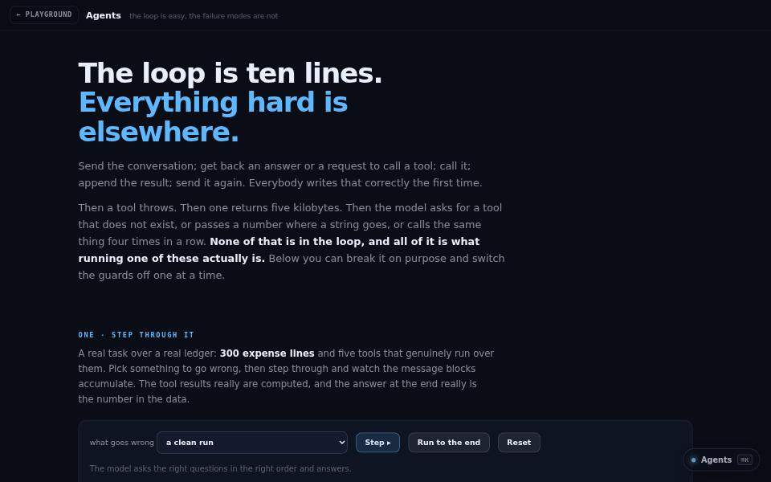

machine learning · about 4 min · The Observatory Reach
Agents
A real tool-use loop you can step through, then break on purpose — with every guard switchable so you can see what it was holding back.

The problem
The agent loop is easy. The failures that kill it in production are not, and are rarely shown.
What it does
- A real tool-use loop you can step through turn by turn
- Five tools over 300 expense lines, with token counts from a real tokeniser
- Every guard can be switched off to see what it was holding back
The most interesting decision
Honest about what is real
The loop, guards, tools, data, message shapes and token accounting are real; the model is a scripted policy that emits the same blocks one would. There is no API key on the page, and it says so.
Built with
- Real tool-use loop
- Five tools over 300 ledger lines
- BPE token counts
- Switchable guards
Evidence
The agent’s answer is checked against the ledger; 29 tests. Read its tests
Its world
Clockwork: an agent walking its loop past tool stations, with every guard on a switch.